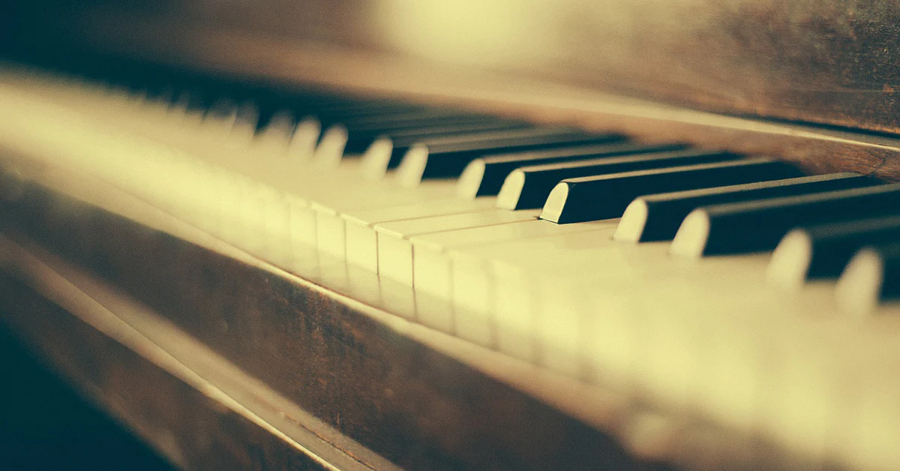

Mijn naam is Jaël Dijk en piano speelt al jarenlang een belangrijke rol in mijn leven. Muziek heeft de kracht om sfeer te creëren en momenten extra bijzonder te maken. Tijdens mijn optredens probeer ik precies dat te doen: muziek laten bijdragen aan de beleving van een moment.
De piano is een instrument dat eindeloos veel mogelijkheden biedt. Van rustige achtergrondmuziek tot emotionele melodieën tijdens bijzondere momenten. Juist die veelzijdigheid maakt het spelen zo bijzonder.
Door de jaren heen heb ik een breed repertoire opgebouwd met muziek uit verschillende stijlen. Hierdoor kan de muziek altijd worden aangepast aan de sfeer van het evenement.
Het mooiste aan pianospelen is het moment waarop muziek mensen raakt. Soms is dat tijdens een ceremonie, soms juist subtiel op de achtergrond tijdens een diner.

Tijdens evenementen speelt muziek vaak een belangrijke rol in de sfeer. Live pianomuziek kan een ruimte direct een warme en stijlvolle uitstraling geven.
Ik speel regelmatig tijdens:
-bruiloften
-diners
-recepties
-zakelijke evenementen
-De muziek wordt altijd afgestemd op het moment en de wensen van de opdrachtgever.
Geen evenement is hetzelfde. Daarom vind ik het belangrijk om vooraf goed te bespreken wat de wensen zijn.
Soms gaat het om rustige achtergrondmuziek, terwijl bij andere momenten juist een speciaal nummer centraal staat. Door samen te kijken naar de sfeer van het evenement kan de muziek daar perfect op aansluiten.
Email: jaeldijk@hotmail.com
Telefoon: +31 6 39749866